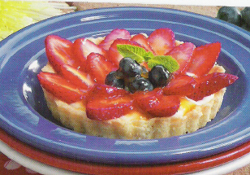
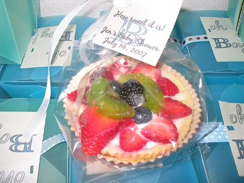

Fresh Fruit Tarts
Makes 6 servings


Photo: jen_rab (CC BY 2.0)
Individual butter-crust tart shells filled with a lemony cream cheese filling and topped with fresh fruit glazed with apricot preserves.
Directions
- In a large bowl, combine the flour, sugar and salt. Cut in butter until mixture resembles coarse crumbs. Add egg; mix with fork until blended. Shape dough into a ball. Cover and refrigerate for 1 hour or until easy to handle.
- Divide dough into six portions. Press each portion into a greased 4-1/2 inch tart pan. Bake at 350 degrees for 15-20 minutes or until edges are lightly browned. Cool for 10 minutes before removing from pans to wire racks to cool completely.
- In a small mixing bow, beat cream cheese until smooth. Beat in sweetened condensed milk and lemon juice. Spoon 2 rounded tablespoonfuls into each cooled tart shell,. Arrange berries over filling.
- In a small saucepan, melt preserves over medium heat; stir until smooth. Brush over berries.
- In a large bowl, combine the flour, sugar, and salt. Cut in the butter until the mixture resembles coarse crumbs. Add the egg and mix with a fork until blended. Shape the dough into a ball, cover, and refrigerate for 1 hour or until easy to handle.
- Divide the dough into six portions. Press each portion into a greased 4-1/2 inch tart pan. Bake at 350°F for 15-20 minutes, or until the edges are lightly browned. Cool for 10 minutes before removing from the pans to wire racks to cool completely.
- Make the filling: In a small mixing bowl, beat the cream cheese until smooth. Beat in the sweetened condensed milk and lemon juice. Spoon 2 rounded tablespoonfuls into each cooled tart shell, then arrange the berries over the filling.
- In a small saucepan, melt the apricot preserves over medium heat and stir until smooth. Brush over the berries.
Goes well with
https://lizotte.cool/recipe/fresh-fruit-tarts.html